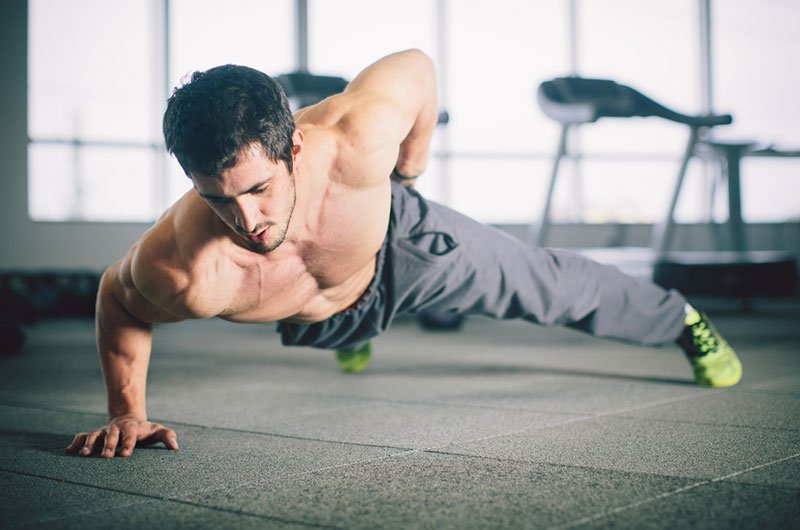

الجسم الكامل ، الذي يُطلق عليه أيضًا تدريبات الدائرة العامة لتدريب القوة ، هو أحد التمارين الروتينية. في الكل ،
هناك ثلاثة أنواع من الروتين: روتين كامل للجسم ونصف الجسم وروتين مقسم.
روتين الانقسام هو أحد أكثر التدريبات شيوعًا. يتضمن التركيز على مجموعات العضلات المختلفة في كل جلسة.
بمعنى ، إذا كنت تتدرب ثلاث مرات في الأسبوع ، فستركز تلك الجلسات الثلاث على مجموعات العضلات المختلفة.